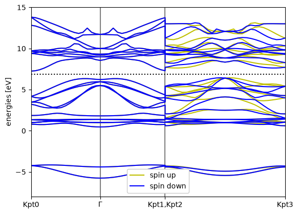
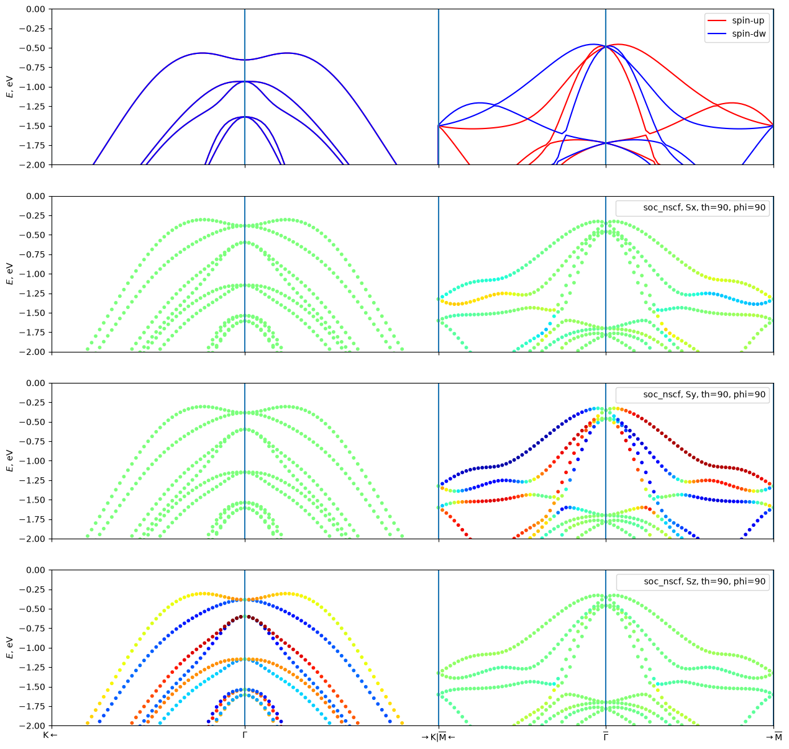
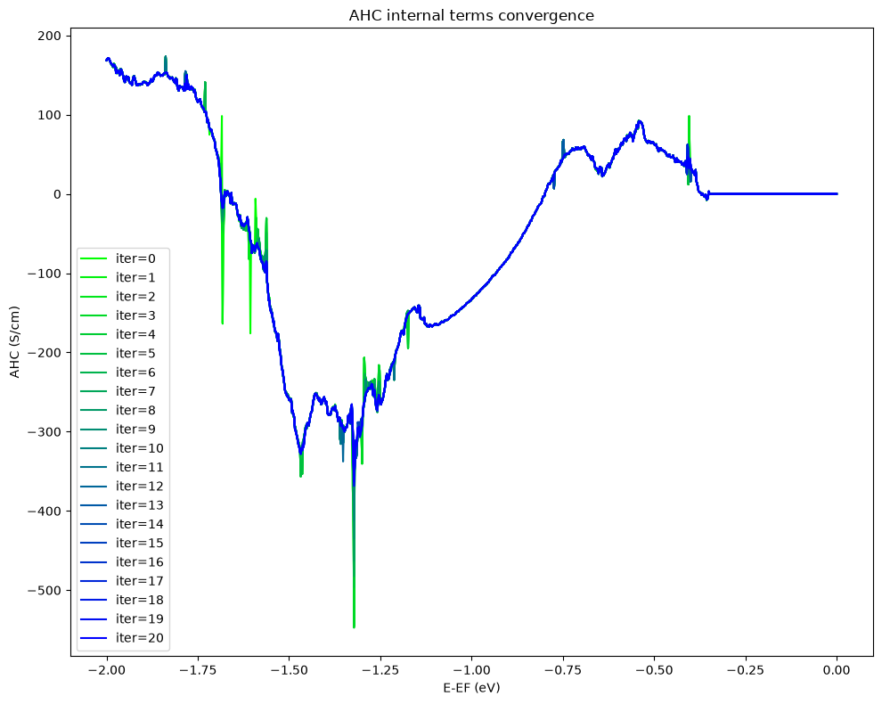

GPAW + WannierBerri: Altermagnet MnTe
It is assumed that the reader is familiar with the previous tutorial on bcc Fe with GPAW. In this tutorial we will show a special case, the crystal structure is anti-ferromagnetic. MnTe has two Mn atoms per unit cell with opposite directions of magnetic moments. As a result in spin-up states, the Mn1 d-states are occupied, while the Mn2 d-states are empty. In the spin-down channel the situation is reversed. Thus, to wannierise only the valence bands, one may want to introduce different projections for the two spin channels.
[1]:
import numpy as np
from ase import Atoms
from gpaw import GPAW, PW, MixerSum
from wannierberri.logging import configure_logging
import logging
configure_logging(console_level=logging.INFO)
import ray
ray.init(num_cpus=16)
seed = "MnTe"
a = 4.134
c = 6.652
lattice = a * np.array([[1, 0, 0], [-1 / 2, np.sqrt(3) / 2, 0], [0, 0, c / a]])
positions = np.array(
[
[0, 0, 0],
[0, 0, 1 / 2],
[1 / 3, 2 / 3, 1 / 4],
[2 / 3, 1 / 3, 3 / 4],
]
)
/home/stepan/miniconda3/envs/wbdev314/lib/python3.14/site-packages/tqdm/auto.py:21: TqdmWarning: IProgress not found. Please update jupyter and ipywidgets. See https://ipywidgets.readthedocs.io/en/stable/user_install.html
from .autonotebook import tqdm as notebook_tqdm
2026-11-12 02:34:25,306 INFO util.py:155 -- Missing packages: ['ipywidgets']. Run `pip install -U ipywidgets`, then restart the notebook server for rich notebook output.
2026-11-12 02:34:25,331 WARNING authentication_token_setup.py:85 -- Token authentication is enabled for this Ray cluster. Set RAY_AUTH_MODE=disabled to opt out. For more information, see https://docs.ray.io/en/latest/ray-security/token-auth.html
2026-11-12 02:34:27,476 INFO worker.py:2038 -- Started a local Ray instance.
Step 1: Gpaw calculation
loading the GPAW calculators
If you want to skip the GPAW calculation, you can just load the pre-calculated calculators (not included in the repository due to size, but if you have run gpaw once, you can find them in the gpaw folder).
[2]:
calc_scf = GPAW(f"gpaw/{seed}-scf.gpw")
calc_nscf = GPAW(f"gpaw/{seed}-nscf-irred-664.gpw")
calc_bands = GPAW(f"gpaw/{seed}-bands-path.gpw")
self-consistent calculation
[ ]:
a = 4.134
c = 6.652
lattice = a * np.array([[1, 0, 0], [-1 / 2, np.sqrt(3) / 2, 0], [0, 0, c / a]])
positions = np.array(
[
[0, 0, 0],
[0, 0, 1 / 2],
[1 / 3, 2 / 3, 1 / 4],
[2 / 3, 1 / 3, 3 / 4],
]
)
atoms = Atoms("Mn2Te2",
cell=lattice,
scaled_positions=positions,
pbc=[1, 1, 1])
m = 4.7
magmoms = np.zeros(4)
magmoms[0] = +m
magmoms[1] = -m
atoms.set_initial_magnetic_moments(magmoms)
calc = GPAW(
mode=PW(600),
xc="PBE",
kpts={"size": [6, 6, 4], "gamma": True},
convergence={"density": 1e-6},
mixer=MixerSum(0.25, 8, 100),
setups={"Mn": ":d,4.0"},
txt="rpaw/MnTe_scf.txt"
)
atoms.calc = calc
atoms.get_potential_energy()
calc.write(f"gpaw/{seed}-scf.gpw", mode="all")
Non-self-consistent calculation in the irreducible Brillouin zone
Now we get the list of irreducible k-points (using irrep.SpaceGroup object) and perform a non-self-consistent calculation only on these k-points. Note, that here we use all symmetries of the crystal structure, even those which are broken by the magnetization direction, because they are still symmetries for each spin channel separately (including the time-reversal symmetry).
[ ]:
from irrep.spacegroup import SpaceGroup
sg = SpaceGroup.from_gpaw(calc)
kpoints_irred = sg.get_irreducible_kpoints_grid([6, 6, 4])
calc_nscf = calc.fixed_density(
kpts=kpoints_irred,
symmetry={'symmorphic': False},
nbands=60,
convergence={'bands': 40},
txt=f'gpaw/{seed}-nscf.txt')
calc_nscf.write(f'gpaw/{seed}-nscf-irred-664.gpw', mode='all')
Compute the dft bandstructure along a high-symmetry path
This is done to compare with the wannierized bandstructure later.
[ ]:
from wannierberri.grid import Path
# recip_lattice = 2*np.pi * np.linalg.inv(lattice).T
kz = 0.35 / (2*np.pi/c)
path = Path(lattice,
nodes=[
[2 / 3, -1 / 3, 0],
[0, 0, 0],
[-2 / 3, 1 / 3, 0],
None,
[-0.5, 0, kz],
[0, 0, kz],
[0.5, 0, kz],
],
labels=[r"${\rm K}\leftarrow$",
r"$\Gamma$",
r"$\rightarrow{\rm K}$",
r"$\overline{\rm M}\leftarrow$",
r"$\overline{\Gamma}$",
r"$\rightarrow\overline{\rm M}$"],
length=100) # length [ Ang] ~= 2*pi/dk
kpoints = path.K_list
print (kpoints.shape)
print (kpoints)
calc_bands = calc_scf.fixed_density(
nbands=30,
symmetry='off',
random=True,
kpts=kpoints,
txt=f'gpaw/{seed}-bands-path.txt',
convergence={'bands': 24})
calc_bands.write(f'gpaw/{seed}-bands-path.gpw', mode='all')
[3]:
bs_dft = calc_bands.band_structure()
bs_dft.plot(show=True, emin=-8,emax=15.0)

[3]:
<Axes: ylabel='energies [eV]'>
Step 2: Wannierization
[4]:
from irrep.spacegroup import SpaceGroup
from wannierberri.symmetry.projections import Projection, ProjectionsSet
sg = SpaceGroup.from_gpaw(calc_nscf)
positions_Mn = [[0, 0, 0],
[0, 0, 1 / 2]]
positions_Te = [[1 / 3, 2 / 3, 1 / 4],
[2 / 3, 1 / 3, 3 / 4]]
proj_Mn1_d = Projection(position_num=positions_Mn[0], orbital='d', spacegroup=sg)
proj_Te_sp2 = Projection(position_num=positions_Te, orbital='sp2', spacegroup=sg, xaxis=[0, -1, 0], rotate_basis=True)
proj_Te_pz = Projection(position_num=positions_Te, orbital='pz', spacegroup=sg)
proj_set_up = ProjectionsSet([proj_Mn1_d, proj_Te_sp2, proj_Te_pz])
create the “w90 files”
Here we are NOT using the gpaw-wannier90 interface, and actually not creating the w90 files, but directly access the wavefunctions from the GPAW calculation, use symmetry operations from irrep, and create the necessary data to be used with wannierberri. Those files still retain the same naming convention as the w90 files for consistency, but htey are binary npz files, which are convenient to work with numpy
After creating those data, it is written to the disk, so that one can later load it. But be careful - if you change anything (e.g. the projections) - do not forget to remove those files, otherwise you will load the old data! For that reason, here we set ‘read_npz_list=[]’ to force the creation of new data.
[6]:
from wannierberri.w90files.wandata_soc import WannierDataSOC
wandata = WannierDataSOC.from_gpaw(
seedname="wannier_soc",
calculator=calc_nscf,
projections_up=proj_set_up,
mp_grid=(6, 6, 4),
spacegroup=sg,
files=["soc", "mmn", "amn", "eig", "symmetrizer"],
altermagnetic=True,
irreducible=True
)
wandata.to_npz("wannier_soc_altermagnetic")
2026-11-12 02:36:02,434 INFO wannierberri.w90files.amn: Creating amn. Using projections_set
ProjectionsSet with 13 Wannier functions and 0 free variables
Projection 0.0, 0.0, 0.0:['d'] with 5 Wannier functions (5 per spin x1 spins)
on 1 points (5 per site)
Projection 0.3333333333333333, 0.6666666666666666, 0.25:['sp2'] with 6 Wannier functions (6 per spin x1 spins)
on 2 points (3 per site)
Projection 0.3333333333333333, 0.6666666666666666, 0.25:['pz'] with 2 Wannier functions (2 per spin x1 spins)
on 2 points (1 per site)
2026-11-12 02:36:02,728 INFO wannierberri.w90files.mmn: NK= 144, selected_kpoints = [ 0 1 2 3 4 5 6 7 8 9 10 11 12 13 14 15 16 17 18 19 20 21 22 23], kptirr = [ 0 1 2 3 4 5 6 7 8 9 10 11 12 13 14 15 16 17 18 19 20 21 22 23]
2026-11-12 02:36:02,730 INFO wannierberri.w90files.mmn: Using PAW kpoints for MMN: [array([0., 0., 0.]), array([0. , 0. , 0.25]), array([0. , 0. , 0.5]), array([0. , 0.16666667, 0. ]), array([0. , 0.16666667, 0.25 ]), array([0. , 0.16666667, 0.5 ]), array([0. , 0.16666667, 0.75 ]), array([0. , 0.33333333, 0. ]), array([0. , 0.33333333, 0.25 ]), array([0. , 0.33333333, 0.5 ]), array([0. , 0.33333333, 0.75 ]), array([0. , 0.5, 0. ]), array([0. , 0.5 , 0.25]), array([0. , 0.5, 0.5]), array([0.16666667, 0.16666667, 0. ]), array([0.16666667, 0.16666667, 0.25 ]), array([0.16666667, 0.16666667, 0.5 ]), array([0.16666667, 0.33333333, 0. ]), array([0.16666667, 0.33333333, 0.25 ]), array([0.16666667, 0.33333333, 0.5 ]), array([0.16666667, 0.33333333, 0.75 ]), array([0.33333333, 0.33333333, 0. ]), array([0.33333333, 0.33333333, 0.25 ]), array([0.33333333, 0.33333333, 0.5 ])]
2026-11-12 02:36:08,493 INFO wannierberri.w90files.io: saving to wannier_soc_altermagnetic.soc.npz :
2026-11-12 02:36:08,528 INFO wannierberri.symmetry.sawf: saving to wannier_soc_altermagnetic-spin-0.sawf.npz :
2026-11-12 02:36:08,569 INFO wannierberri.w90files.io: saving to wannier_soc_altermagnetic-spin-0.bkvec.npz :
2026-11-12 02:36:08,572 INFO wannierberri.w90files.io: saving to wannier_soc_altermagnetic-spin-0.chk.npz :
2026-11-12 02:36:08,574 INFO wannierberri.w90files.io: saving to wannier_soc_altermagnetic-spin-0.eig.npz :
2026-11-12 02:36:08,576 INFO wannierberri.w90files.io: saving to wannier_soc_altermagnetic-spin-0.amn.npz :
2026-11-12 02:36:08,579 INFO wannierberri.w90files.io: saving to wannier_soc_altermagnetic-spin-0.mmn.npz :
Do the wannierization
at this step we also specify the frozen window, number of iterations, and whether to use site symmetry and localization. (when starting from irreducible BZ, site-symmetry is required anyway)
We also may use the outer window via w90data.select_bands if needed
In this case, both spin channels will be wannierised separately, starting from the same projections.There is also an option to specify different projections for different spin channels if needed. (See MnTe tutorial)
[7]:
wandata.wannierise(
froz_min=-10,
froz_max=7,
outer_min=-10,
outer_max=np.inf,
num_iter=100,
print_progress_every=50,
sitesym=True,
localise=True,
check_sym_accuracy=1e-5,
check_sym_no_exclude_bands=-10,
)
2026-11-12 02:36:08,626 WARNING wannierberri.wannierisation.wannierise: The check of irreps is not implemented for anti-unitary symmetries. Skipping the check, leaving to your responsibility
2026-11-12 02:36:08,627 INFO wannierberri.wannierisation.wannierise: Using the Wannier centers from the projections as initial guess
2026-11-12 02:36:08,775 WARNING wannierberri.symmetry.sawf_kirr: symmetrization+orthogonalization did not converge in 10 iterations, final changes 0.005028621920674698, 3.970459310517417e-05; probably the input data are not perfectly symmetrizable, or the provided projections are notcompatible with the irreps of the DFT bands.
2026-11-12 02:36:08,931 WARNING wannierberri.symmetry.sawf_kirr: symmetrization+orthogonalization did not converge in 10 iterations, final changes 0.003620773930459292, 2.0823989316852954e-05; probably the input data are not perfectly symmetrizable, or the provided projections are notcompatible with the irreps of the DFT bands.
2026-11-12 02:36:08,934 INFO wannierberri.symmetry.sawf_kirr: Symmetrizer_Uirr initialized for ikirr=1, kpt=1, [0. 0. 0.25] with 12 symmetries, max error in included blocks: 4.563368870654192e-06 ; excluded bands are [56 57 58 59] out of 60 total bands (accuracy threshold 1e-05)
2026-11-12 02:36:08,983 INFO wannierberri.symmetry.sawf_kirr: Symmetrizer_Uirr initialized for ikirr=2, kpt=2, [0. 0. 0.5] with 24 symmetries, max error in included blocks: 2.2204139558266494e-06 ; excluded bands are [] out of 60 total bands (accuracy threshold 1e-05)
2026-11-12 02:36:09,030 INFO wannierberri.symmetry.sawf_kirr: Symmetrizer_Uirr initialized for ikirr=3, kpt=3, [0. 0.16666667 0. ] with 4 symmetries, max error in included blocks: 9.37309316825414e-06 ; excluded bands are [58 59] out of 60 total bands (accuracy threshold 1e-05)
2026-11-12 02:36:09,087 WARNING wannierberri.symmetry.sawf_kirr: symmetrization+orthogonalization did not converge in 10 iterations, final changes 0.00928210105389091, 0.0008458410717954452; probably the input data are not perfectly symmetrizable, or the provided projections are notcompatible with the irreps of the DFT bands.
2026-11-12 02:36:09,133 WARNING wannierberri.symmetry.sawf_kirr: symmetrization+orthogonalization did not converge in 10 iterations, final changes 9.822901429656497e-05, 2.7046495220928292e-05; probably the input data are not perfectly symmetrizable, or the provided projections are notcompatible with the irreps of the DFT bands.
2026-11-12 02:36:09,134 INFO wannierberri.symmetry.sawf_kirr: Symmetrizer_Uirr initialized for ikirr=5, kpt=5, [0. 0.16666667 0.5 ] with 4 symmetries, max error in included blocks: 2.6729962498911654e-06 ; excluded bands are [58 59] out of 60 total bands (accuracy threshold 1e-05)
2026-11-12 02:36:09,196 WARNING wannierberri.symmetry.sawf_kirr: symmetrization+orthogonalization did not converge in 10 iterations, final changes 0.006488755385972159, 0.0005252944808726942; probably the input data are not perfectly symmetrizable, or the provided projections are notcompatible with the irreps of the DFT bands.
2026-11-12 02:36:09,391 WARNING wannierberri.symmetry.sawf_kirr: symmetrization+orthogonalization did not converge in 10 iterations, final changes 0.0001231235135729961, 2.6079247526207673e-05; probably the input data are not perfectly symmetrizable, or the provided projections are notcompatible with the irreps of the DFT bands.
2026-11-12 02:36:09,499 INFO wannierberri.symmetry.sawf_kirr: Symmetrizer_Uirr initialized for ikirr=8, kpt=8, [0. 0.33333333 0.25 ] with 4 symmetries, max error in included blocks: 1.6656450536598571e-06 ; excluded bands are [57 58 59] out of 60 total bands (accuracy threshold 1e-05)
2026-11-12 02:36:09,540 WARNING wannierberri.symmetry.sawf_kirr: symmetrization+orthogonalization did not converge in 10 iterations, final changes 0.01697281627761266, 0.0011531098110038444; probably the input data are not perfectly symmetrizable, or the provided projections are notcompatible with the irreps of the DFT bands.
2026-11-12 02:36:09,650 WARNING wannierberri.symmetry.sawf_kirr: symmetrization+orthogonalization did not converge in 10 iterations, final changes 0.0007849003462621594, 0.00016363597626997009; probably the input data are not perfectly symmetrizable, or the provided projections are notcompatible with the irreps of the DFT bands.
2026-11-12 02:36:09,654 INFO wannierberri.symmetry.sawf_kirr: Symmetrizer_Uirr initialized for ikirr=11, kpt=11, [0. 0.5 0. ] with 8 symmetries, max error in included blocks: 3.959224611886008e-06 ; excluded bands are [56 57 58 59] out of 60 total bands (accuracy threshold 1e-05)
2026-11-12 02:36:09,982 INFO wannierberri.symmetry.sawf_kirr: Symmetrizer_Uirr initialized for ikirr=13, kpt=13, [0. 0.5 0.5] with 8 symmetries, max error in included blocks: 7.602495890280968e-06 ; excluded bands are [57 58 59] out of 60 total bands (accuracy threshold 1e-05)
2026-11-12 02:36:10,058 INFO wannierberri.symmetry.sawf_kirr: Symmetrizer_Uirr initialized for ikirr=14, kpt=14, [0.16666667 0.16666667 0. ] with 4 symmetries, max error in included blocks: 2.3652391366712083e-06 ; excluded bands are [59] out of 60 total bands (accuracy threshold 1e-05)
2026-11-12 02:36:10,865 WARNING wannierberri.symmetry.sawf_kirr: symmetrization+orthogonalization did not converge in 10 iterations, final changes 0.0018234416931926713, 0.00018567608915224742; probably the input data are not perfectly symmetrizable, or the provided projections are notcompatible with the irreps of the DFT bands.
2026-11-12 02:36:10,871 INFO wannierberri.symmetry.sawf_kirr: Symmetrizer_Uirr initialized for ikirr=21, kpt=21, [0.33333333 0.33333333 0. ] with 12 symmetries, max error in included blocks: 2.291212520149665e-06 ; excluded bands are [53 54 55 56 57 58 59] out of 60 total bands (accuracy threshold 1e-05)
2026-11-12 02:36:10,912 WARNING wannierberri.symmetry.sawf_kirr: symmetrization+orthogonalization did not converge in 10 iterations, final changes 0.0030471884245124813, 1.7507948847009993e-05; probably the input data are not perfectly symmetrizable, or the provided projections are notcompatible with the irreps of the DFT bands.
2026-11-12 02:36:10,914 WARNING wannierberri.symmetry.sawf_kirr: max error in block 15 [25:27] is 2.691842497566633e-05, exceeding threshold 1e-05, and this is not among the upper bands(50:60) bands, this may indicate inaccuracy in the input data
2026-11-12 02:36:10,915 INFO wannierberri.symmetry.sawf_kirr: Symmetrizer_Uirr initialized for ikirr=22, kpt=22, [0.33333333 0.33333333 0.25 ] with 6 symmetries, max error in included blocks: 2.691842497566633e-05 ; excluded bands are [57 58 59] out of 60 total bands (accuracy threshold 1e-05)
2026-11-12 02:36:15,580 INFO wannierberri.wannierisation.wannierise: ####################################################################################################
2026-11-12 02:36:15,581 INFO wannierberri.wannierisation.wannierise: starting WFs
2026-11-12 02:36:15,582 INFO wannierberri.wannierisation.wannierise: ----------------------------------------------------------------------------------------------------
2026-11-12 02:36:15,583 INFO wannierberri.wannierisation.wannierise: wannier centers and spreads
2026-11-12 02:36:15,585 INFO wannierberri.wannierisation.wannierise: ----------------------------------------------------------------------------------------------------
2026-11-12 02:36:15,585 INFO wannierberri.wannierisation.wannierise: 0.000000000000 0.000000000000 0.000000000000 | 0.484489492172
2026-11-12 02:36:15,586 INFO wannierberri.wannierisation.wannierise: 0.000000000000 0.000000000000 0.000000000000 | 0.473508056635
2026-11-12 02:36:15,587 INFO wannierberri.wannierisation.wannierise: 0.000000000000 0.000000000000 0.000000000000 | 0.473508056635
2026-11-12 02:36:15,587 INFO wannierberri.wannierisation.wannierise: 0.000000000000 0.000000000000 0.000000000000 | 0.457939241268
2026-11-12 02:36:15,588 INFO wannierberri.wannierisation.wannierise: 0.000000000000 0.000000000000 0.000000000000 | 0.457939241268
2026-11-12 02:36:15,588 INFO wannierberri.wannierisation.wannierise: 0.715030119727 2.799588844933 1.678042683692 | 2.215571062776
2026-11-12 02:36:15,588 INFO wannierberri.wannierisation.wannierise: -0.715030119727 2.799588844933 1.678042683692 | 2.215571062776
2026-11-12 02:36:15,589 INFO wannierberri.wannierisation.wannierise: 0.000000000000 1.561120348624 1.678042683692 | 2.215571062776
2026-11-12 02:36:15,589 INFO wannierberri.wannierisation.wannierise: 1.351969880273 0.780560174312 4.973957316308 | 2.215571062776
2026-11-12 02:36:15,589 INFO wannierberri.wannierisation.wannierise: 2.782030119727 0.780560174312 4.973957316308 | 2.215571062776
2026-11-12 02:36:15,590 INFO wannierberri.wannierisation.wannierise: 2.067000000000 2.019028670621 4.973957316308 | 2.215571062776
2026-11-12 02:36:15,590 INFO wannierberri.wannierisation.wannierise: 0.000000000000 2.386766012830 1.729854825170 | 3.582468598625
2026-11-12 02:36:15,591 INFO wannierberri.wannierisation.wannierise: 2.067000000000 1.193383006415 4.922145174830 | 3.582468598625
2026-11-12 02:36:15,591 INFO wannierberri.wannierisation.wannierise: ----------------------------------------------------------------------------------------------------
2026-11-12 02:36:15,591 INFO wannierberri.wannierisation.wannierise: 8.268000000000 14.320596076979 26.608000000000 | 22.805747661885 <- sum
2026-11-12 02:36:15,592 INFO wannierberri.wannierisation.wannierise: maximal spread = 3.582468598625
2026-11-12 02:36:15,592 INFO wannierberri.wannierisation.wannierise: ####################################################################################################
2026-11-12 02:36:15,676 INFO wannierberri.wannierisation.wannierise: ####################################################################################################
2026-11-12 02:36:15,677 INFO wannierberri.wannierisation.wannierise: Iteration 0 (from wannierizer)
2026-11-12 02:36:15,678 INFO wannierberri.wannierisation.wannierise: ----------------------------------------------------------------------------------------------------
2026-11-12 02:36:15,678 INFO wannierberri.wannierisation.wannierise: wannier centers and spreads
2026-11-12 02:36:15,679 INFO wannierberri.wannierisation.wannierise: ----------------------------------------------------------------------------------------------------
2026-11-12 02:36:15,680 INFO wannierberri.wannierisation.wannierise: 0.000000000000 0.000000000000 0.000000000000 | 0.478929975973
2026-11-12 02:36:15,680 INFO wannierberri.wannierisation.wannierise: 0.000000000000 0.000000000000 0.000000000000 | 0.469563283558
2026-11-12 02:36:15,681 INFO wannierberri.wannierisation.wannierise: 0.000000000000 0.000000000000 0.000000000000 | 0.469563283558
2026-11-12 02:36:15,682 INFO wannierberri.wannierisation.wannierise: 0.000000000000 0.000000000000 0.000000000000 | 0.454607459706
2026-11-12 02:36:15,683 INFO wannierberri.wannierisation.wannierise: 0.000000000000 0.000000000000 0.000000000000 | 0.454607459706
2026-11-12 02:36:15,683 INFO wannierberri.wannierisation.wannierise: 0.715265049984 2.799724481980 1.679302428792 | 2.205936576072
2026-11-12 02:36:15,684 INFO wannierberri.wannierisation.wannierise: -0.715265049984 2.799724481980 1.679302428792 | 2.205936576072
2026-11-12 02:36:15,684 INFO wannierberri.wannierisation.wannierise: 0.000000000000 1.560849074530 1.679302428792 | 2.205936576072
2026-11-12 02:36:15,685 INFO wannierberri.wannierisation.wannierise: 1.351734950016 0.780424537265 4.972697571208 | 2.205936576072
2026-11-12 02:36:15,686 INFO wannierberri.wannierisation.wannierise: 2.782265049984 0.780424537265 4.972697571208 | 2.205936576072
2026-11-12 02:36:15,686 INFO wannierberri.wannierisation.wannierise: 2.067000000000 2.019299944715 4.972697571208 | 2.205936576072
2026-11-12 02:36:15,687 INFO wannierberri.wannierisation.wannierise: 0.000000000000 2.386766012830 1.730315184838 | 3.569118724634
2026-11-12 02:36:15,688 INFO wannierberri.wannierisation.wannierise: 2.067000000000 1.193383006415 4.921684815162 | 3.569118724634
2026-11-12 02:36:15,688 INFO wannierberri.wannierisation.wannierise: ----------------------------------------------------------------------------------------------------
2026-11-12 02:36:15,689 INFO wannierberri.wannierisation.wannierise: 8.268000000000 14.320596076979 26.608000000000 | 22.701128368199 <- sum
2026-11-12 02:36:15,689 INFO wannierberri.wannierisation.wannierise: maximal spread = 3.569118724634
2026-11-12 02:36:15,690 INFO wannierberri.wannierisation.wannierise: standard deviation = 0.0
2026-11-12 02:36:15,690 INFO wannierberri.wannierisation.wannierise: ####################################################################################################
2026-11-12 02:36:19,040 INFO wannierberri.wannierisation.wannierise: ####################################################################################################
2026-11-12 02:36:19,041 INFO wannierberri.wannierisation.wannierise: Iteration 50 (from wannierizer)
2026-11-12 02:36:19,042 INFO wannierberri.wannierisation.wannierise: ----------------------------------------------------------------------------------------------------
2026-11-12 02:36:19,042 INFO wannierberri.wannierisation.wannierise: wannier centers and spreads
2026-11-12 02:36:19,042 INFO wannierberri.wannierisation.wannierise: ----------------------------------------------------------------------------------------------------
2026-11-12 02:36:19,043 INFO wannierberri.wannierisation.wannierise: 0.000000000000 0.000000000000 0.000000000000 | 0.453286741616
2026-11-12 02:36:19,043 INFO wannierberri.wannierisation.wannierise: 0.000000000000 0.000000000000 0.000000000000 | 0.473931289260
2026-11-12 02:36:19,043 INFO wannierberri.wannierisation.wannierise: 0.000000000000 0.000000000000 0.000000000000 | 0.473931289260
2026-11-12 02:36:19,043 INFO wannierberri.wannierisation.wannierise: 0.000000000000 0.000000000000 0.000000000000 | 0.451955985722
2026-11-12 02:36:19,044 INFO wannierberri.wannierisation.wannierise: 0.000000000000 0.000000000000 0.000000000000 | 0.451955985722
2026-11-12 02:36:19,044 INFO wannierberri.wannierisation.wannierise: 0.711471235889 2.797534122391 1.688699327935 | 2.082541481985
2026-11-12 02:36:19,044 INFO wannierberri.wannierisation.wannierise: -0.711471235889 2.797534122391 1.688699327935 | 2.082541481985
2026-11-12 02:36:19,044 INFO wannierberri.wannierisation.wannierise: -0.000000000000 1.565229793708 1.688699327935 | 2.082541481985
2026-11-12 02:36:19,045 INFO wannierberri.wannierisation.wannierise: 1.355528764111 0.782614896854 4.963300672065 | 2.082541481985
2026-11-12 02:36:19,045 INFO wannierberri.wannierisation.wannierise: 2.778471235889 0.782614896854 4.963300672065 | 2.082541481985
2026-11-12 02:36:19,045 INFO wannierberri.wannierisation.wannierise: 2.067000000000 2.014919225537 4.963300672065 | 2.082541481985
2026-11-12 02:36:19,045 INFO wannierberri.wannierisation.wannierise: 0.000000000000 2.386766012830 1.747860130857 | 3.450336621104
2026-11-12 02:36:19,046 INFO wannierberri.wannierisation.wannierise: 2.067000000000 1.193383006415 4.904139869143 | 3.450336621104
2026-11-12 02:36:19,046 INFO wannierberri.wannierisation.wannierise: ----------------------------------------------------------------------------------------------------
2026-11-12 02:36:19,046 INFO wannierberri.wannierisation.wannierise: 8.268000000000 14.320596076979 26.608000000000 | 21.700983425700 <- sum
2026-11-12 02:36:19,047 INFO wannierberri.wannierisation.wannierise: maximal spread = 3.450336621104
2026-11-12 02:36:19,047 INFO wannierberri.wannierisation.wannierise: standard deviation = 0.00032356493499032836
2026-11-12 02:36:19,047 INFO wannierberri.wannierisation.wannierise: ####################################################################################################
2026-11-12 02:36:21,964 INFO wannierberri.wannierisation.wannierise: ####################################################################################################
2026-11-12 02:36:21,965 INFO wannierberri.wannierisation.wannierise: Final state (from wannierizer)
2026-11-12 02:36:21,965 INFO wannierberri.wannierisation.wannierise: ----------------------------------------------------------------------------------------------------
2026-11-12 02:36:21,965 INFO wannierberri.wannierisation.wannierise: wannier centers and spreads
2026-11-12 02:36:21,966 INFO wannierberri.wannierisation.wannierise: ----------------------------------------------------------------------------------------------------
2026-11-12 02:36:21,966 INFO wannierberri.wannierisation.wannierise: 0.000000000000 0.000000000000 0.000000000000 | 0.453822158776
2026-11-12 02:36:21,966 INFO wannierberri.wannierisation.wannierise: 0.000000000000 0.000000000000 0.000000000000 | 0.479537068695
2026-11-12 02:36:21,966 INFO wannierberri.wannierisation.wannierise: 0.000000000000 0.000000000000 0.000000000000 | 0.479537068695
2026-11-12 02:36:21,966 INFO wannierberri.wannierisation.wannierise: 0.000000000000 0.000000000000 0.000000000000 | 0.453680566092
2026-11-12 02:36:21,967 INFO wannierberri.wannierisation.wannierise: 0.000000000000 0.000000000000 0.000000000000 | 0.453680566092
2026-11-12 02:36:21,967 INFO wannierberri.wannierisation.wannierise: 0.711209116439 2.797382787656 1.681155193462 | 2.082192786948
2026-11-12 02:36:21,967 INFO wannierberri.wannierisation.wannierise: -0.711209116439 2.797382787656 1.681155193462 | 2.082192786948
2026-11-12 02:36:21,967 INFO wannierberri.wannierisation.wannierise: 0.000000000000 1.565532463177 1.681155193462 | 2.082192786948
2026-11-12 02:36:21,967 INFO wannierberri.wannierisation.wannierise: 1.355790883561 0.782766231589 4.970844806538 | 2.082192786948
2026-11-12 02:36:21,968 INFO wannierberri.wannierisation.wannierise: 2.778209116439 0.782766231589 4.970844806538 | 2.082192786948
2026-11-12 02:36:21,968 INFO wannierberri.wannierisation.wannierise: 2.067000000000 2.014616556067 4.970844806538 | 2.082192786948
2026-11-12 02:36:21,968 INFO wannierberri.wannierisation.wannierise: -0.000000000000 2.386766012830 1.771566169050 | 3.442396562267
2026-11-12 02:36:21,968 INFO wannierberri.wannierisation.wannierise: 2.067000000000 1.193383006415 4.880433830950 | 3.442396562267
2026-11-12 02:36:21,968 INFO wannierberri.wannierisation.wannierise: ----------------------------------------------------------------------------------------------------
2026-11-12 02:36:21,968 INFO wannierberri.wannierisation.wannierise: 8.268000000000 14.320596076979 26.608000000000 | 21.698207274573 <- sum
2026-11-12 02:36:21,968 INFO wannierberri.wannierisation.wannierise: maximal spread = 3.442396562267
2026-11-12 02:36:21,969 INFO wannierberri.wannierisation.wannierise: standard deviation = 0.0004687551341196928
2026-11-12 02:36:21,969 INFO wannierberri.wannierisation.wannierise: ####################################################################################################
2026-11-12 02:36:21,969 INFO wannierberri.wannierisation.wannierise: time for creating wannierizer 2.3786699771881104
2026-11-12 02:36:21,969 INFO wannierberri.wannierisation.wannierise: time for iterations 6.362494468688965
2026-11-12 02:36:21,969 INFO wannierberri.wannierisation.wannierise: time for updating 4.74878454208374
2026-11-12 02:36:21,969 INFO wannierberri.wannierisation.wannierise: total time for wannierization 13.359253168106079
2026-11-12 02:36:21,970 INFO wannierberri.w90files.io: saving to wannier_soc-spin-0.chk :
Create the System object to be used in WannierBerri calculations
It is called “System_w90” class, although it now does not use the w90 wannierization, but the class is the same.
Unlike the non-SOC systems, here we also specify the direction of the magnetization. We can later easily chanbge this direction without redoing the wannierization.
[10]:
from wannierberri.system.system_soc import SystemSOC
system_soc = SystemSOC.from_wannierdata(wandata=wandata, berry=True, silent=False)
system_soc.to_npz("system_soc_altermagnetic")
2026-11-12 02:38:20,564 INFO wannierberri.system.system_w90: irreducible : True, symmetrize set to True
2026-11-12 02:38:20,742 INFO wannierberri.symmetry.sym_wann_2: num_blocks_left = 3, num_blocks_right = 3
2026-11-12 02:38:20,742 INFO wannierberri.system.system_R: number o R-vectors before symmetrization: 267
2026-11-12 02:38:21,019 INFO wannierberri.system.system_R: number o R-vectors after symmetrization: 573
2026-11-12 02:38:21,182 INFO wannierberri.symmetry.sym_wann_2: num_blocks_left = 3, num_blocks_right = 3
2026-11-12 02:38:21,456 INFO wannierberri.system.system_soc: using magmoms
[[ 0.00000000e+00 0.00000000e+00 4.40436811e+00]
[-0.00000000e+00 -0.00000000e+00 -4.40436811e+00]
[-0.00000000e+00 -0.00000000e+00 -2.92436898e-10]
[-0.00000000e+00 -0.00000000e+00 -2.92436898e-10]]
2026-11-12 02:38:21,476 INFO wannierberri.system.system_soc: Saving SystemSOC to system_soc_altermagnetic
2026-11-12 02:38:21,477 INFO wannierberri.system.system_R: saving system of class SystemSOC to system_soc_altermagnetic
properties: ['num_wann', 'real_lattice', 'iRvec', 'periodic', 'is_phonon', 'wannier_centers_cart', 'pointgroup', 'cell']
2026-11-12 02:38:21,484 INFO wannierberri.system.system_R: saving system of class System_R to system_soc_altermagnetic/system_up
properties: ['num_wann', 'real_lattice', 'iRvec', 'periodic', 'is_phonon', 'wannier_centers_cart', 'pointgroup']
2026-11-12 02:38:21,494 INFO wannierberri.system.system_R: saving system of class System_R to system_soc_altermagnetic/system_down
properties: ['num_wann', 'real_lattice', 'iRvec', 'periodic', 'is_phonon', 'wannier_centers_cart', 'pointgroup']
Compute the wannierized bandstructure with SOC along the high-symmetry path
[11]:
from wannierberri.grid import Path
from wannierberri.evaluate_k import evaluate_k_path
from wannierberri.system.system_soc import SystemSOC
system_soc = SystemSOC.from_npz("system_soc_altermagnetic")
theta = 90
phi = 90
system_soc.set_soc_axis(theta=theta, phi=phi, alpha_soc=1.0, units="degrees")
kz = 0.35 / (2*np.pi/c)
path = Path.from_nodes(real_lattice=lattice,
nodes=[
[2 / 3, -1 / 3, 0],
[0, 0, 0],
[-2 / 3, 1 / 3, 0],
None,
[-0.5, 0, kz],
[0, 0, kz],
[0.5, 0, kz],
],
labels=[r"${\rm K}\leftarrow$",
r"$\Gamma$",
r"$\rightarrow{\rm K}$",
r"$\overline{\rm M}\leftarrow$",
r"$\overline{\Gamma}$",
r"$\rightarrow\overline{\rm M}$"],
length=300) # length [ Ang] ~= 2*pi/dk
bands_wannier_soc= evaluate_k_path(system_soc, path=path, quantities=["spin"])
bands_wannier_up = evaluate_k_path(system_soc.system_up, path=path)
bands_wannier_dw = evaluate_k_path(system_soc.system_down, path=path)
2026-11-12 02:38:28,543 INFO wannierberri.system.system_soc: using magmoms
[[ 2.69689765e-16 4.40436811e+00 2.69689765e-16]
[-2.69689765e-16 -4.40436811e+00 -2.69689765e-16]
[-1.79065955e-26 -2.92436898e-10 -1.79065955e-26]
[-1.79065955e-26 -2.92436898e-10 -1.79065955e-26]]
2026-11-12 02:38:28,548 OUTPUT wannierberri.run_grid:
Using the follwing calculators :
############################################################
'tabulate' : <wannierberri.calculators.tabulate.TabulatorAll object at 0x7c102c01bd90> :
TabulatorAll - a pack of all k-resolved calculators (Tabulators)
Includes the following tabulators :
--------------------------------------------------
"spin" : <wannierberri.calculators.tabulate.Spin object at 0x7c12d299f770> : Spin expectation :math:` \langle u | \mathbf{\sigma} | u \rangle`
"Energy" : <wannierberri.calculators.tabulate.Energy object at 0x7c12a8473b10> : calculator not described
--------------------------------------------------
2026-11-12 02:38:28,549 INFO wannierberri.run_grid: Symmetrization switched off for Path
2026-11-12 02:38:28,549 INFO wannierberri.run_grid: Grid is regular
2026-11-12 02:38:28,549 INFO wannierberri.run_grid: The set of k points is a Path() with 182 points and labels {0: '${\\rm K}\\leftarrow$', 48: '$\\Gamma$', 96: '$\\rightarrow{\\rm K}$', 97: '$\\overline{\\rm M}\\leftarrow$', 139: '$\\overline{\\Gamma}$', 181: '$\\rightarrow\\overline{\\rm M}$'}
2026-11-12 02:38:28,558 WARNING wannierberri.grid.path: symmetry is not used for a tabulation along path
2026-11-12 02:38:28,559 OUTPUT wannierberri.run_grid: Iteration 0 out of 0
2026-11-12 02:38:28,560 INFO wannierberri.run_grid: processing 4 K points using 16 processes.
2026-11-12 02:38:28,561 INFO wannierberri.run_grid: # K-points calculated Wall time (sec) Est. remaining (sec) Est. total (sec)
2026-11-12 02:38:28,753 INFO wannierberri.run_grid: time for processing 4 K-points on 16 processes: 0.1930 ; per K-point 0.0483 ; proc-sec per K-point 0.7721
2026-11-12 02:38:28,753 OUTPUT wannierberri.run_grid: Totally processed 4 K-points
2026-11-12 02:38:28,754 OUTPUT wannierberri.run_grid: run() finished
2026-11-12 02:38:28,757 OUTPUT wannierberri.run_grid:
Using the follwing calculators :
############################################################
'tabulate' : <wannierberri.calculators.tabulate.TabulatorAll object at 0x7c12a8473b10> :
TabulatorAll - a pack of all k-resolved calculators (Tabulators)
Includes the following tabulators :
--------------------------------------------------
"Energy" : <wannierberri.calculators.tabulate.Energy object at 0x7c101c4c3950> : calculator not described
--------------------------------------------------
2026-11-12 02:38:28,758 INFO wannierberri.run_grid: Symmetrization switched off for Path
2026-11-12 02:38:28,758 INFO wannierberri.run_grid: Grid is regular
2026-11-12 02:38:28,758 INFO wannierberri.run_grid: The set of k points is a Path() with 182 points and labels {0: '${\\rm K}\\leftarrow$', 48: '$\\Gamma$', 96: '$\\rightarrow{\\rm K}$', 97: '$\\overline{\\rm M}\\leftarrow$', 139: '$\\overline{\\Gamma}$', 181: '$\\rightarrow\\overline{\\rm M}$'}
2026-11-12 02:38:28,765 WARNING wannierberri.grid.path: symmetry is not used for a tabulation along path
2026-11-12 02:38:28,766 OUTPUT wannierberri.run_grid: Iteration 0 out of 0
2026-11-12 02:38:28,767 INFO wannierberri.run_grid: processing 4 K points using 16 processes.
2026-11-12 02:38:28,768 INFO wannierberri.run_grid: # K-points calculated Wall time (sec) Est. remaining (sec) Est. total (sec)
2026-11-12 02:38:28,799 INFO wannierberri.run_grid: time for processing 4 K-points on 16 processes: 0.0323 ; per K-point 0.0081 ; proc-sec per K-point 0.1292
2026-11-12 02:38:28,800 OUTPUT wannierberri.run_grid: Totally processed 4 K-points
2026-11-12 02:38:28,800 OUTPUT wannierberri.run_grid: run() finished
2026-11-12 02:38:28,804 OUTPUT wannierberri.run_grid:
Using the follwing calculators :
############################################################
'tabulate' : <wannierberri.calculators.tabulate.TabulatorAll object at 0x7c101c4c3950> :
TabulatorAll - a pack of all k-resolved calculators (Tabulators)
Includes the following tabulators :
--------------------------------------------------
"Energy" : <wannierberri.calculators.tabulate.Energy object at 0x7c101c2af100> : calculator not described
--------------------------------------------------
2026-11-12 02:38:28,805 INFO wannierberri.run_grid: Symmetrization switched off for Path
2026-11-12 02:38:28,806 INFO wannierberri.run_grid: Grid is regular
2026-11-12 02:38:28,806 INFO wannierberri.run_grid: The set of k points is a Path() with 182 points and labels {0: '${\\rm K}\\leftarrow$', 48: '$\\Gamma$', 96: '$\\rightarrow{\\rm K}$', 97: '$\\overline{\\rm M}\\leftarrow$', 139: '$\\overline{\\Gamma}$', 181: '$\\rightarrow\\overline{\\rm M}$'}
2026-11-12 02:38:28,815 WARNING wannierberri.grid.path: symmetry is not used for a tabulation along path
2026-11-12 02:38:28,817 OUTPUT wannierberri.run_grid: Iteration 0 out of 0
2026-11-12 02:38:28,819 INFO wannierberri.run_grid: processing 4 K points using 16 processes.
2026-11-12 02:38:28,819 INFO wannierberri.run_grid: # K-points calculated Wall time (sec) Est. remaining (sec) Est. total (sec)
2026-11-12 02:38:28,874 INFO wannierberri.run_grid: time for processing 4 K-points on 16 processes: 0.0569 ; per K-point 0.0142 ; proc-sec per K-point 0.2277
2026-11-12 02:38:28,875 OUTPUT wannierberri.run_grid: Totally processed 4 K-points
2026-11-12 02:38:28,876 OUTPUT wannierberri.run_grid: run() finished
Plot the Bandstructure with and without SOC
[12]:
from matplotlib import pyplot as plt
EF = 6.885145845031927
fig, axes = plt.subplots(4, 1, sharey=True, sharex=True, figsize=(15, 15))
for i in range(3):
component = "xyz"[i]
bands_wannier_soc.plot_path_fat(path=path,
Eshift=EF,
quantity="spin",
component=component,
mode="color",
label=f"soc_nscf, S{component}, th={theta}, phi={phi}",
axes=axes[1 + i],
fatmax=10,
linecolor="orange",
close_fig=False,
show_fig=False,
kwargs_line=dict(linestyle='-', lw=0.0),
)
bands_wannier_up.plot_path_fat(path=path,
Eshift=EF,
axes=axes[0],
label="spin-up",
linecolor="red",
close_fig=False,
show_fig=False,
)
bands_wannier_dw.plot_path_fat(path=path,
label="spin-dw",
axes=axes[0],
Eshift=EF,
linecolor="blue",
close_fig=False,
show_fig=False,)
plt.ylim(-2,0)
plt.show()

AHC
magnetic moments along “y” direction
Below we evaluate only the “internal” (which depend only on the Hamiltonian) contributions to the anomalous Hall conductivity (AHC), how to include the “external” contributions is explained in the previous tutorial on bcc Fe.
[13]:
import os
import numpy as np
import wannierberri as wb
from wannierberri.system.system_soc import SystemSOC
system_soc_y = SystemSOC.from_npz("system_soc_altermagnetic")
theta=90
phi=90
system_soc_y.set_soc_axis(theta=theta, phi=phi, units="degrees")
grid = wb.grid.Grid(system_soc_y, NK=200)
EF = 6.885145845031927
tetra = False
Efermi = np.linspace(EF - 2, EF, 1001)
os.makedirs("results", exist_ok=True)
result_int = wb.run(system_soc_y,
grid=grid,
fout_name=f"results/{seed}-soc-y",
calculators={"ahc_int": wb.calculators.static.AHC(Efermi=Efermi, tetra=tetra, kwargs_formula={"external_terms": False})},
adpt_num_iter=20,
)
2026-11-12 02:39:55,573 INFO wannierberri.system.system_soc: using magmoms
[[ 2.69689765e-16 4.40436811e+00 2.69689765e-16]
[-2.69689765e-16 -4.40436811e+00 -2.69689765e-16]
[-1.79065955e-26 -2.92436898e-10 -1.79065955e-26]
[-1.79065955e-26 -2.92436898e-10 -1.79065955e-26]]
2026-11-12 02:39:56,051 INFO wannierberri.grid.grid: Minimal symmetric FFT grid : [13 13 8]
2026-11-12 02:39:56,117 INFO wannierberri.grid.grid: The grids were set to NKdiv=[10 10 25], NKFFT=[20 20 8], NKtot=[200 200 200]
2026-11-12 02:39:56,118 OUTPUT wannierberri.run_grid:
Using the follwing calculators :
############################################################
'ahc_int' : <wannierberri.calculators.static.AHC object at 0x7c1000606660> : Anomalous Hall conductivity (:math:`s^3 \cdot A^2 / (kg \cdot m^3) = S/m`)
| With Fermi sea integral Eq(11) in `Ref <https://www.nature.com/articles/s41524-021-00498-5>`__
| Output: :math:`O = -e^2/\hbar \int [dk] \Omega f`
| Instruction: :math:`j_\alpha = \sigma_{\alpha\beta} E_\beta = \epsilon_{\alpha\beta\delta} O_\delta E_\beta`
2026-11-12 02:39:56,118 INFO wannierberri.run_grid: Grid is regular
2026-11-12 02:39:56,119 INFO wannierberri.run_grid: The set of k points is a Grid() with NKdiv=[10 10 25], NKFFT=[20 20 8], NKtot=[200 200 200]
2026-11-12 02:39:56,173 INFO wannierberri.grid.grid: K_list contains 403 Irreducible points(16.12%) out of initial 10x10x25=2500 grid
2026-11-12 02:39:56,174 OUTPUT wannierberri.run_grid: Iteration 0 out of 20
2026-11-12 02:39:56,176 INFO wannierberri.run_grid: processing 403 K points using 16 processes.
2026-11-12 02:39:56,176 INFO wannierberri.run_grid: # K-points calculated Wall time (sec) Est. remaining (sec) Est. total (sec)
2026-11-12 02:40:19,379 INFO wannierberri.run_grid: 16 23.2 561.2 584.4
2026-11-12 02:40:30,352 INFO wannierberri.run_grid: 32 34.2 396.2 430.4
2026-11-12 02:40:47,014 INFO wannierberri.run_grid: 48 50.8 376.0 426.8
2026-11-12 02:40:54,991 INFO wannierberri.run_grid: 64 58.8 311.5 370.4
2026-11-12 02:41:01,907 INFO wannierberri.run_grid: 80 65.7 265.4 331.1
2026-11-12 02:41:09,108 INFO wannierberri.run_grid: 96 72.9 233.2 306.2
2026-11-12 02:41:16,173 INFO wannierberri.run_grid: 112 80.0 207.9 287.9
2026-11-12 02:41:22,850 INFO wannierberri.run_grid: 128 86.7 186.2 272.9
2026-11-12 02:41:29,623 INFO wannierberri.run_grid: 144 93.4 168.1 261.5
2026-11-12 02:41:37,281 INFO wannierberri.run_grid: 160 101.1 153.6 254.7
2026-11-12 02:41:43,820 INFO wannierberri.run_grid: 176 107.6 138.8 246.5
2026-11-12 02:41:49,379 INFO wannierberri.run_grid: 192 113.2 124.4 237.6
2026-11-12 02:41:55,716 INFO wannierberri.run_grid: 208 119.5 112.1 231.6
2026-11-12 02:42:03,344 INFO wannierberri.run_grid: 224 127.2 101.6 228.8
2026-11-12 02:42:08,668 INFO wannierberri.run_grid: 240 132.5 90.0 222.5
2026-11-12 02:42:15,345 INFO wannierberri.run_grid: 256 139.2 79.9 219.1
2026-11-12 02:42:26,795 INFO wannierberri.run_grid: 288 150.6 60.1 210.8
2026-11-12 02:42:33,393 INFO wannierberri.run_grid: 304 157.2 51.2 208.4
2026-11-12 02:42:39,715 INFO wannierberri.run_grid: 320 163.5 42.4 206.0
2026-11-12 02:42:45,260 INFO wannierberri.run_grid: 336 169.1 33.7 202.8
2026-11-12 02:42:56,615 INFO wannierberri.run_grid: 368 180.4 17.2 197.6
2026-11-12 02:43:03,160 INFO wannierberri.run_grid: 384 187.0 9.3 196.2
2026-11-12 02:43:07,748 INFO wannierberri.run_grid: time for processing 403 K-points on 16 processes: 191.5731 ; per K-point 0.4754 ; proc-sec per K-point 7.6059
2026-11-12 02:43:07,845 INFO wannierberri.run_grid: sum of weights now : 0.999999999999999
2026-11-12 02:43:07,846 OUTPUT wannierberri.run_grid: Iteration 1 out of 20
2026-11-12 02:43:07,860 INFO wannierberri.run_grid: processing 4 K points using 16 processes.
2026-11-12 02:43:07,860 INFO wannierberri.run_grid: # K-points calculated Wall time (sec) Est. remaining (sec) Est. total (sec)
2026-11-12 02:43:10,976 INFO wannierberri.run_grid: time for processing 4 K-points on 16 processes: 3.1277 ; per K-point 0.7819 ; proc-sec per K-point 12.5106
2026-11-12 02:43:10,978 INFO wannierberri.run_grid: factors changed for old points : {2: np.float64(-0.0008)}
2026-11-12 02:43:10,997 INFO wannierberri.run_grid: sum of weights now : 0.9999999999999989
2026-11-12 02:43:10,997 OUTPUT wannierberri.run_grid: Iteration 2 out of 20
2026-11-12 02:43:11,000 INFO wannierberri.run_grid: processing 2 K points using 16 processes.
2026-11-12 02:43:11,001 INFO wannierberri.run_grid: # K-points calculated Wall time (sec) Est. remaining (sec) Est. total (sec)
2026-11-12 02:43:13,351 INFO wannierberri.run_grid: time for processing 2 K-points on 16 processes: 2.3533 ; per K-point 1.1766 ; proc-sec per K-point 18.8262
2026-11-12 02:43:13,352 INFO wannierberri.run_grid: factors changed for old points : {0: np.float64(-0.0004)}
2026-11-12 02:43:13,364 INFO wannierberri.run_grid: sum of weights now : 0.9999999999999988
2026-11-12 02:43:13,365 OUTPUT wannierberri.run_grid: Iteration 3 out of 20
2026-11-12 02:43:13,366 INFO wannierberri.run_grid: processing 8 K points using 16 processes.
2026-11-12 02:43:13,367 INFO wannierberri.run_grid: # K-points calculated Wall time (sec) Est. remaining (sec) Est. total (sec)
2026-11-12 02:43:18,500 INFO wannierberri.run_grid: time for processing 8 K-points on 16 processes: 5.1346 ; per K-point 0.6418 ; proc-sec per K-point 10.2693
2026-11-12 02:43:18,500 INFO wannierberri.run_grid: factors changed for old points : {3: np.float64(-0.0008), 66: np.float64(-0.0008)}
2026-11-12 02:43:18,517 INFO wannierberri.run_grid: sum of weights now : 0.9999999999999986
2026-11-12 02:43:18,518 OUTPUT wannierberri.run_grid: Iteration 4 out of 20
2026-11-12 02:43:18,519 INFO wannierberri.run_grid: processing 8 K points using 16 processes.
2026-11-12 02:43:18,519 INFO wannierberri.run_grid: # K-points calculated Wall time (sec) Est. remaining (sec) Est. total (sec)
2026-11-12 02:43:23,563 INFO wannierberri.run_grid: time for processing 8 K-points on 16 processes: 5.0445 ; per K-point 0.6306 ; proc-sec per K-point 10.0890
2026-11-12 02:43:23,563 INFO wannierberri.run_grid: factors changed for old points : {8: np.float64(-0.0008), 12: np.float64(-0.0008)}
2026-11-12 02:43:23,585 INFO wannierberri.run_grid: sum of weights now : 0.9999999999999983
2026-11-12 02:43:23,585 OUTPUT wannierberri.run_grid: Iteration 5 out of 20
2026-11-12 02:43:23,587 INFO wannierberri.run_grid: processing 12 K points using 16 processes.
2026-11-12 02:43:23,587 INFO wannierberri.run_grid: # K-points calculated Wall time (sec) Est. remaining (sec) Est. total (sec)
2026-11-12 02:43:29,917 INFO wannierberri.run_grid: time for processing 12 K-points on 16 processes: 6.3314 ; per K-point 0.5276 ; proc-sec per K-point 8.4419
2026-11-12 02:43:29,919 INFO wannierberri.run_grid: factors changed for old points : {5: np.float64(-0.0008), 44: np.float64(-0.0016)}
2026-11-12 02:43:29,934 INFO wannierberri.run_grid: sum of weights now : 0.9999999999999978
2026-11-12 02:43:29,934 OUTPUT wannierberri.run_grid: Iteration 6 out of 20
2026-11-12 02:43:29,936 INFO wannierberri.run_grid: processing 12 K points using 16 processes.
2026-11-12 02:43:29,936 INFO wannierberri.run_grid: # K-points calculated Wall time (sec) Est. remaining (sec) Est. total (sec)
2026-11-12 02:43:36,282 INFO wannierberri.run_grid: time for processing 12 K-points on 16 processes: 6.3469 ; per K-point 0.5289 ; proc-sec per K-point 8.4626
2026-11-12 02:43:36,283 INFO wannierberri.run_grid: factors changed for old points : {4: np.float64(-0.0008), 314: np.float64(-0.0016), 322: np.float64(-0.0016)}
2026-11-12 02:43:36,293 INFO wannierberri.run_grid: sum of weights now : 0.9999999999999976
2026-11-12 02:43:36,294 OUTPUT wannierberri.run_grid: Iteration 7 out of 20
2026-11-12 02:43:36,297 INFO wannierberri.run_grid: processing 12 K points using 16 processes.
2026-11-12 02:43:36,297 INFO wannierberri.run_grid: # K-points calculated Wall time (sec) Est. remaining (sec) Est. total (sec)
2026-11-12 02:43:42,573 INFO wannierberri.run_grid: time for processing 12 K-points on 16 processes: 6.2784 ; per K-point 0.5232 ; proc-sec per K-point 8.3713
2026-11-12 02:43:42,573 INFO wannierberri.run_grid: factors changed for old points : {7: np.float64(-0.0008), 30: np.float64(-0.0016)}
2026-11-12 02:43:42,583 INFO wannierberri.run_grid: sum of weights now : 0.9999999999999974
2026-11-12 02:43:42,583 OUTPUT wannierberri.run_grid: Iteration 8 out of 20
2026-11-12 02:43:42,584 INFO wannierberri.run_grid: processing 4 K points using 16 processes.
2026-11-12 02:43:42,585 INFO wannierberri.run_grid: # K-points calculated Wall time (sec) Est. remaining (sec) Est. total (sec)
2026-11-12 02:43:45,681 INFO wannierberri.run_grid: time for processing 4 K-points on 16 processes: 3.0973 ; per K-point 0.7743 ; proc-sec per K-point 12.3891
2026-11-12 02:43:45,682 INFO wannierberri.run_grid: factors changed for old points : {11: np.float64(-0.0008)}
2026-11-12 02:43:45,692 INFO wannierberri.run_grid: sum of weights now : 0.9999999999999971
2026-11-12 02:43:45,692 OUTPUT wannierberri.run_grid: Iteration 9 out of 20
2026-11-12 02:43:45,694 INFO wannierberri.run_grid: processing 8 K points using 16 processes.
2026-11-12 02:43:45,694 INFO wannierberri.run_grid: # K-points calculated Wall time (sec) Est. remaining (sec) Est. total (sec)
2026-11-12 02:43:49,953 INFO wannierberri.run_grid: time for processing 8 K-points on 16 processes: 4.2598 ; per K-point 0.5325 ; proc-sec per K-point 8.5195
2026-11-12 02:43:49,954 INFO wannierberri.run_grid: factors changed for old points : {9: np.float64(-0.0008), 317: np.float64(-0.0016)}
2026-11-12 02:43:49,967 INFO wannierberri.run_grid: sum of weights now : 0.999999999999997
2026-11-12 02:43:49,967 OUTPUT wannierberri.run_grid: Iteration 10 out of 20
2026-11-12 02:43:49,969 INFO wannierberri.run_grid: processing 8 K points using 16 processes.
2026-11-12 02:43:49,969 INFO wannierberri.run_grid: # K-points calculated Wall time (sec) Est. remaining (sec) Est. total (sec)
2026-11-12 02:43:54,271 INFO wannierberri.run_grid: time for processing 8 K-points on 16 processes: 4.3034 ; per K-point 0.5379 ; proc-sec per K-point 8.6067
2026-11-12 02:43:54,272 INFO wannierberri.run_grid: factors changed for old points : {6: np.float64(-0.0008), 10: np.float64(-0.0008)}
2026-11-12 02:43:54,281 INFO wannierberri.run_grid: sum of weights now : 0.9999999999999969
2026-11-12 02:43:54,281 OUTPUT wannierberri.run_grid: Iteration 11 out of 20
2026-11-12 02:43:54,283 INFO wannierberri.run_grid: processing 4 K points using 16 processes.
2026-11-12 02:43:54,283 INFO wannierberri.run_grid: # K-points calculated Wall time (sec) Est. remaining (sec) Est. total (sec)
2026-11-12 02:43:57,357 INFO wannierberri.run_grid: time for processing 4 K-points on 16 processes: 3.0750 ; per K-point 0.7687 ; proc-sec per K-point 12.3000
2026-11-12 02:43:57,358 INFO wannierberri.run_grid: factors changed for old points : {1: np.float64(-0.0008)}
2026-11-12 02:43:57,371 INFO wannierberri.run_grid: sum of weights now : 0.9999999999999961
2026-11-12 02:43:57,372 OUTPUT wannierberri.run_grid: Iteration 12 out of 20
2026-11-12 02:43:57,373 INFO wannierberri.run_grid: processing 20 K points using 16 processes.
2026-11-12 02:43:57,373 INFO wannierberri.run_grid: # K-points calculated Wall time (sec) Est. remaining (sec) Est. total (sec)
2026-11-12 02:44:06,329 INFO wannierberri.run_grid: 16 9.0 2.2 11.2
2026-11-12 02:44:07,880 INFO wannierberri.run_grid: time for processing 20 K-points on 16 processes: 10.5073 ; per K-point 0.5254 ; proc-sec per K-point 8.4058
2026-11-12 02:44:07,884 INFO wannierberri.run_grid: factors changed for old points : {63: np.float64(-0.0016), 254: np.float64(-0.0032000000000000006), 321: np.float64(-0.0016)}
2026-11-12 02:44:07,901 INFO wannierberri.run_grid: sum of weights now : 0.9999999999999961
2026-11-12 02:44:07,901 OUTPUT wannierberri.run_grid: Iteration 13 out of 20
2026-11-12 02:44:07,903 INFO wannierberri.run_grid: processing 8 K points using 16 processes.
2026-11-12 02:44:07,903 INFO wannierberri.run_grid: # K-points calculated Wall time (sec) Est. remaining (sec) Est. total (sec)
2026-11-12 02:44:12,393 INFO wannierberri.run_grid: time for processing 8 K-points on 16 processes: 4.4917 ; per K-point 0.5615 ; proc-sec per K-point 8.9833
2026-11-12 02:44:12,395 INFO wannierberri.run_grid: factors changed for old points : {488: np.float64(-0.0004)}
2026-11-12 02:44:12,403 INFO wannierberri.run_grid: sum of weights now : 0.9999999999999958
2026-11-12 02:44:12,404 OUTPUT wannierberri.run_grid: Iteration 14 out of 20
2026-11-12 02:44:12,405 INFO wannierberri.run_grid: processing 16 K points using 16 processes.
2026-11-12 02:44:12,405 INFO wannierberri.run_grid: # K-points calculated Wall time (sec) Est. remaining (sec) Est. total (sec)
2026-11-12 02:44:20,230 INFO wannierberri.run_grid: time for processing 16 K-points on 16 processes: 7.8265 ; per K-point 0.4892 ; proc-sec per K-point 7.8265
2026-11-12 02:44:20,235 INFO wannierberri.run_grid: factors changed for old points : {37: np.float64(-0.0016), 46: np.float64(-0.0016)}
2026-11-12 02:44:20,258 INFO wannierberri.run_grid: sum of weights now : 0.9999999999999951
2026-11-12 02:44:20,259 OUTPUT wannierberri.run_grid: Iteration 15 out of 20
2026-11-12 02:44:20,261 INFO wannierberri.run_grid: processing 16 K points using 16 processes.
2026-11-12 02:44:20,261 INFO wannierberri.run_grid: # K-points calculated Wall time (sec) Est. remaining (sec) Est. total (sec)
2026-11-12 02:44:28,011 INFO wannierberri.run_grid: time for processing 16 K-points on 16 processes: 7.7522 ; per K-point 0.4845 ; proc-sec per K-point 7.7522
2026-11-12 02:44:28,012 INFO wannierberri.run_grid: factors changed for old points : {147: np.float64(-0.0032000000000000006), 269: np.float64(-0.0032000000000000006)}
2026-11-12 02:44:28,028 INFO wannierberri.run_grid: sum of weights now : 0.9999999999999944
2026-11-12 02:44:28,029 OUTPUT wannierberri.run_grid: Iteration 16 out of 20
2026-11-12 02:44:28,030 INFO wannierberri.run_grid: processing 16 K points using 16 processes.
2026-11-12 02:44:28,030 INFO wannierberri.run_grid: # K-points calculated Wall time (sec) Est. remaining (sec) Est. total (sec)
2026-11-12 02:44:35,892 INFO wannierberri.run_grid: time for processing 16 K-points on 16 processes: 7.8633 ; per K-point 0.4915 ; proc-sec per K-point 7.8633
2026-11-12 02:44:35,893 INFO wannierberri.run_grid: factors changed for old points : {88: np.float64(-0.0032000000000000006), 145: np.float64(-0.0032000000000000006)}
2026-11-12 02:44:35,905 INFO wannierberri.run_grid: sum of weights now : 0.999999999999994
2026-11-12 02:44:35,905 OUTPUT wannierberri.run_grid: Iteration 17 out of 20
2026-11-12 02:44:35,907 INFO wannierberri.run_grid: processing 12 K points using 16 processes.
2026-11-12 02:44:35,908 INFO wannierberri.run_grid: # K-points calculated Wall time (sec) Est. remaining (sec) Est. total (sec)
2026-11-12 02:44:42,305 INFO wannierberri.run_grid: time for processing 12 K-points on 16 processes: 6.3992 ; per K-point 0.5333 ; proc-sec per K-point 8.5322
2026-11-12 02:44:42,306 INFO wannierberri.run_grid: factors changed for old points : {69: np.float64(-0.0008), 90: np.float64(-0.0032000000000000006)}
2026-11-12 02:44:42,317 INFO wannierberri.run_grid: sum of weights now : 0.9999999999999934
2026-11-12 02:44:42,317 OUTPUT wannierberri.run_grid: Iteration 18 out of 20
2026-11-12 02:44:42,319 INFO wannierberri.run_grid: processing 12 K points using 16 processes.
2026-11-12 02:44:42,319 INFO wannierberri.run_grid: # K-points calculated Wall time (sec) Est. remaining (sec) Est. total (sec)
2026-11-12 02:44:48,623 INFO wannierberri.run_grid: time for processing 12 K-points on 16 processes: 6.3060 ; per K-point 0.5255 ; proc-sec per K-point 8.4080
2026-11-12 02:44:48,624 INFO wannierberri.run_grid: factors changed for old points : {131: np.float64(-0.0032000000000000006), 318: np.float64(-0.0016)}
2026-11-12 02:44:48,646 INFO wannierberri.run_grid: sum of weights now : 0.999999999999993
2026-11-12 02:44:48,646 OUTPUT wannierberri.run_grid: Iteration 19 out of 20
2026-11-12 02:44:48,648 INFO wannierberri.run_grid: processing 12 K points using 16 processes.
2026-11-12 02:44:48,649 INFO wannierberri.run_grid: # K-points calculated Wall time (sec) Est. remaining (sec) Est. total (sec)
2026-11-12 02:44:55,054 INFO wannierberri.run_grid: time for processing 12 K-points on 16 processes: 6.4072 ; per K-point 0.5339 ; proc-sec per K-point 8.5430
2026-11-12 02:44:55,055 INFO wannierberri.run_grid: factors changed for old points : {70: np.float64(-0.0008), 148: np.float64(-0.0032000000000000006)}
2026-11-12 02:44:55,064 INFO wannierberri.run_grid: sum of weights now : 0.9999999999999926
2026-11-12 02:44:55,064 OUTPUT wannierberri.run_grid: Iteration 20 out of 20
2026-11-12 02:44:55,066 INFO wannierberri.run_grid: processing 16 K points using 16 processes.
2026-11-12 02:44:55,066 INFO wannierberri.run_grid: # K-points calculated Wall time (sec) Est. remaining (sec) Est. total (sec)
2026-11-12 02:45:03,236 INFO wannierberri.run_grid: time for processing 16 K-points on 16 processes: 8.1717 ; per K-point 0.5107 ; proc-sec per K-point 8.1717
2026-11-12 02:45:03,237 INFO wannierberri.run_grid: factors changed for old points : {49: np.float64(-0.0016), 89: np.float64(-0.0032000000000000006)}
2026-11-12 02:45:03,249 OUTPUT wannierberri.run_grid: Totally processed 613 K-points
2026-11-12 02:45:03,250 OUTPUT wannierberri.run_grid: run() finished
plot AHC vs energy
[14]:
from matplotlib import pyplot as plt
import numpy as np
theta=0
phi=0
fig, axes = plt.subplots(1, 1, sharey=False, sharex=True, figsize=(10, 8))
axes=[axes]
imin = 0
imax = 20
for i in range(imin, imax+1, 1):
t = (i-imin)/(imax-imin)
res = np.load(f"results/MnTe-soc-y-ahc_int_iter-{i:04d}.npz")
Efermi = res['Energies_0']
ahc = res["data"]
axes[0].plot(Efermi - EF, ahc[:,2]/100, label=f"iter={i}", color=(0, 1-t, t))
axes[0].set_title("AHC internal terms convergence")
# axes[0].set_ylim(-1000, 0)
axes[0].set_xlabel("E-EF (eV)")
axes[0].set_ylabel("AHC (S/cm)")
axes[0].legend()
plt.tight_layout()
plt.savefig("ahc_convergence.png", dpi=300)

We can observe 3 things, which are generally true, not only for AHC, but for most other effects: 1. The internal terms converge slower than the external ones. 2. The external terms usually give a smaller contribution. Often (but not always) it is negligible. However, check it for a particular material and effect. 3. The external terms take more time to evaluate per k-point.
Thus, it makes sense to evaluate them separately, using different k-point grids and number of iterations for the adaptive integration.
Other directions of magnetic moments
We could try to calculate the AHC when the magnetic moments are along “z” or “x” directions. However, we can see that in those cases the point group contains symmetries which force the AHC to be zero. This can be demonstrated by the following way:
[15]:
from irrep.spacegroup import SpaceGroup
from wannierberri.symmetry.point_symmetry import PointGroup
# x direction
mg = SpaceGroup.from_cell(real_lattice=lattice, positions=positions, typat=[1,1,2,2], magmom=[[1,0,0],[-1,0,0],[0,0,0],[0,0,0]])
# mg.show()
pointgroup = PointGroup(spacegroup=mg)
print (f"components of AHC for magnetic moments along x direction: {pointgroup.get_symmetric_components(rank=1, TRodd=True, Iodd=False)}")
mg = SpaceGroup.from_cell(real_lattice=lattice, positions=positions, typat=[1,1,2,2], magmom=[[0,1,0],[0,-1,0],[0,0,0],[0,0,0]])
# mg.show()
pointgroup = PointGroup(spacegroup=mg)
print (f"components of AHC for magnetic moments along y direction: {pointgroup.get_symmetric_components(rank=1, TRodd=True, Iodd=False)}")
mg = SpaceGroup.from_cell(real_lattice=lattice, positions=positions, typat=[1,1,2,2], magmom=[[0,0,1],[0,0,-1],[0,0,0],[0,0,0]])
# mg.show()
pointgroup = PointGroup(spacegroup=mg)
print (f"components of AHC for magnetic moments along z direction: {pointgroup.get_symmetric_components(rank=1, TRodd=True, Iodd=False)}")
components of AHC for magnetic moments along x direction: ['0=x=y=z']
components of AHC for magnetic moments along y direction: ['0=x=y', 'z']
components of AHC for magnetic moments along z direction: ['0=x=y=z']
[ ]: